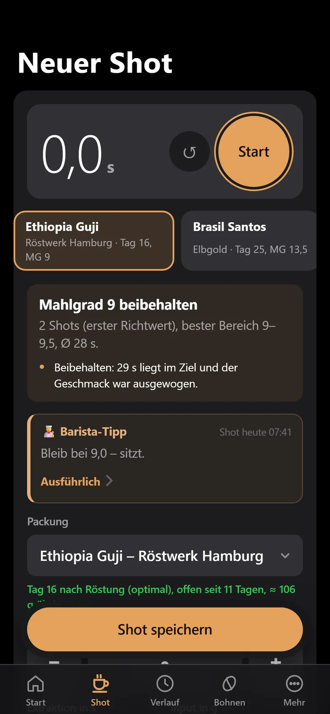
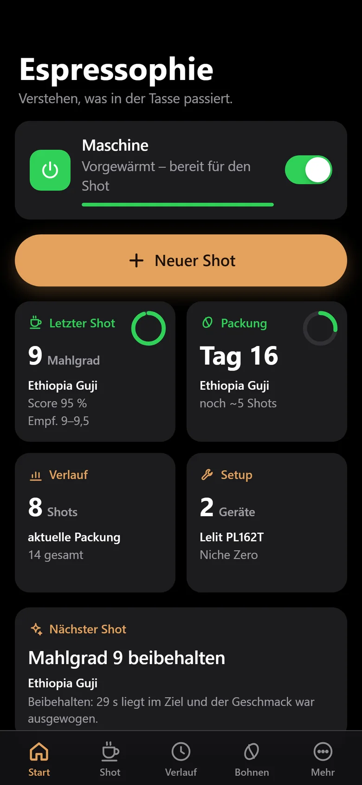

Der große Shot-Timer.
Start tippen, Pumpe läuft, Stopp tippen. Bohne, Mahlgrad und Mengen sind aus dem letzten Shot schon ausgefüllt – speichern, fertig.

Verstehen, was in der Tasse passiert. Die Espresso-App, die aus jedem Shot lernt.
Ein guter Espresso ist kein Zufall. Mahlgrad, Menge, Zeit und Geschmack – Espressophie merkt sich alles und sagt dir, was du beim nächsten Shot ändern solltest.
Wie eine Siebträgermaschine: wenige Knöpfe, aber jeder sitzt.
Start tippen, Pumpe läuft, Stopp tippen. Bohne, Mahlgrad und Mengen sind aus dem letzten Shot schon ausgefüllt – speichern, fertig.

Berechnet aus deinen besten Shots – pro Bohne und pro Mühle.
Vier kurze Fragen statt Fachchinesisch. Daraus wird deine Bewertung – und der nächste Tipp.
Stufenlos, Stufen, Klicks oder Zahl plus Buchstabe – die App zählt so wie deine Mühle.
Röstalter, Restmenge, Preis pro Shot – und eine Erinnerung zum Nachkaufen.
Testshots laufen separat, bis das Rezept sitzt – deine Statistik bleibt sauber.
Zeitziel, Bewertung und der Trend pro Bohne – auf einen Blick.
„Vorgewärmt“, „Schaltet gleich ab“, „Reinigung fällig“, „Bohnen nachkaufen“ – jede einzeln schaltbar.
Jede Woche eine Sicherung in deinem Google Drive. Export und Import als Datei inklusive.
Dein bester Shot als schönes Bild – fertig zum Teilen mit Freunden oder auf Instagram.
Espressophie lernt mit. Schon nach wenigen Shots weißt du, was funktioniert.
Timer starten, Mengen eintragen, vier Fragen zum Geschmack. Mit smarter Steckdose wird die Extraktionszeit sogar automatisch erkannt.
Auf dem Startbildschirm steht sofort, was du beim nächsten Shot ändern solltest – mit Begründung. Feiner, gröber oder genau so lassen.
Aus deinen besten Shots entsteht eine Empfehlung pro Bohne und Mühle. Neue Packung? Ein Tipp, und der Shot ist vorausgefüllt.
Verlauf und Statistik zeigen, wie deine Shots besser werden. So wird aus Bauchgefühl reproduzierbarer Geschmack.
Nach jedem Shot eine kurze Einschätzung und ein konkreter nächster Schritt. Und wenn du mehr wissen willst, fragst du einfach – in deinen Worten.
Du nutzt deinen eigenen Schlüssel beim Anbieter deiner Wahl. Name oder E-Mail werden nie übertragen.
Mit einer Shelly-Steckdose schaltest du die Maschine per App ein – zu Hause über WLAN, unterwegs über die Shelly Cloud. Espressophie sagt dir, wann sie bereit ist.
Getestet mit dem Shelly Plug S Gen3. Shelly ist eine Marke der Shelly Group; Espressophie ist kein offizielles Shelly-Produkt.
Espressophie folgt dem Erscheinungsbild deines Handys. Die Akzentfarbe wählst du selbst – probier es aus.


Karamell
Dein bestes Rezept steckt komplett im Link. Freunde öffnen ihn – und übernehmen es mit einem Tipp.
Espressophie hat keinen eigenen Server. Mit Google-Anmeldung liegen deine Daten im Ordner „Espressophie“ in deinem Drive – die App sieht nur ihre eigenen Dateien. Ohne Anmeldung bleibt alles auf dem Handy.
Nicht jetzt, nicht später.
Keine Analyse-Dienste, keine Cookies – auch auf dieser Website nicht.
Daten gehen nur an Dienste, die du selbst einrichtest.
Espressophie ist im Test. Die Veröffentlichung für Android im Google Play Store ist in Vorbereitung.
Nichts. Nutzt du den optionalen KI-Barista mit einem kostenpflichtigen Anbieter, rechnet dieser direkt mit dir ab – meist deutlich unter einem Cent pro Tipp. Mit Groq oder OpenRouter geht es auch kostenlos.
Nein. Shots, Bohnen, Empfehlungen und Statistik funktionieren ohne. Die Steckdose ergänzt Vorheizen, Shot-Erkennung und Verbrauchsanzeige.
Ja. 15 verbreitete Mühlen kennt die App schon mit ihrer Skala. Jede andere legst du in wenigen Sekunden selbst an – stufenlos, mit Stufen, Klicks oder Zahl plus Buchstabe.
Nein. Ohne Anmeldung bleiben deine Daten nur auf dem Handy. Mit Google-Anmeldung werden sie in deinem eigenen Google Drive gesichert und sind auf allen deinen Geräten verfügbar.
Nur Shot-Daten (Bohne, Mahlgrad, Mengen, Zeit, Geschmack, Notiz), deine Zielwerte und dein Setup – kein Name, keine E-Mail. Die Anfrage geht direkt an den Anbieter, den du gewählt hast, mit deinem eigenen Schlüssel.
Ja. Unter Mehr → Design & Bedienung schaltest du auf „Retro“ mit Chrom-Manometern wie an deiner Maschine.
Espressophie erscheint bald im Google Play Store.
Bald bei Google Play